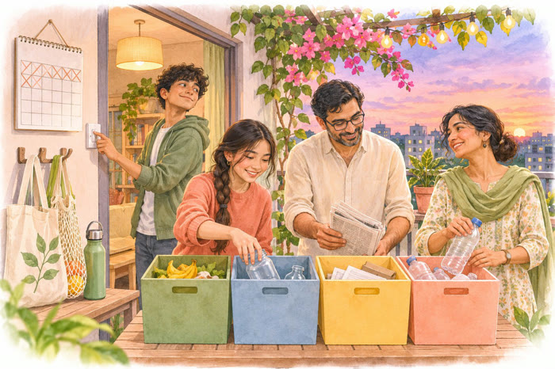

Listen to the text
Speed:

After the Eco Day I came home full of energy. "We have to change everything," I told my family at dinner. "No car, no plastic, no meat, solar panels on the balcony!" Dad put down his spoon. "Let's start with something smaller," he said. "Five habits for thirty days. If they work, we will keep them." We wrote a list and put it on the fridge. Habit 1. Turn it off. We decided to turn off the lights in empty rooms and to unplug chargers. My brother Lev became the "light police" and gave fines: one sweet for each lamp left on. Dad lost eleven sweets in the first week. At the end of the month our electricity bill was smaller by almost a fifth. Habit 2. Shorter showers. We put a kitchen timer in the bathroom: five minutes for each of us. My sister, whose usual shower lasts twenty minutes, said that it was against human rights. By the third week she could wash her hair in four. Habit 3. Our own bags. Reusable bags now hang on the door handle, so we can't leave home without seeing them. Before the experiment we brought home about fifteen plastic bags a week. Now it is one or two. Habit 4. Sorting. We set up four boxes on the balcony: paper, plastic, glass and metal. The hardest part was learning the rules. A pizza box with oil on it, for example, is not paper any more. On Saturdays Lev and I take the boxes to the containers near the supermarket. Habit 5. Nothing goes to waste. Mum started to plan our meals for a week, and we buy only what is on the list. Old bread becomes croutons, and soft apples become a pie. We throw away half as much food as before. Not everything was a success. We tried to live a week without the car, and on Wednesday it rained so hard that Dad drove us to school in silence. We also learnt that home-made toothpaste tastes like chalk. But after thirty days nobody wanted to take the list off the fridge. The habits have stopped being an experiment. They are just the way we live. Lev has only one complaint. Nobody leaves the lights on any more, and he has run out of sweets.
Tap any sentence to hear it again.
Сподобалось? На сайті ще більше матеріалів для вчителів!
Reader, презентації, ігри, діагностичні та контрольні роботи до підручників 1-11 класів.
Перейти на сайт materials.allaenglish.com